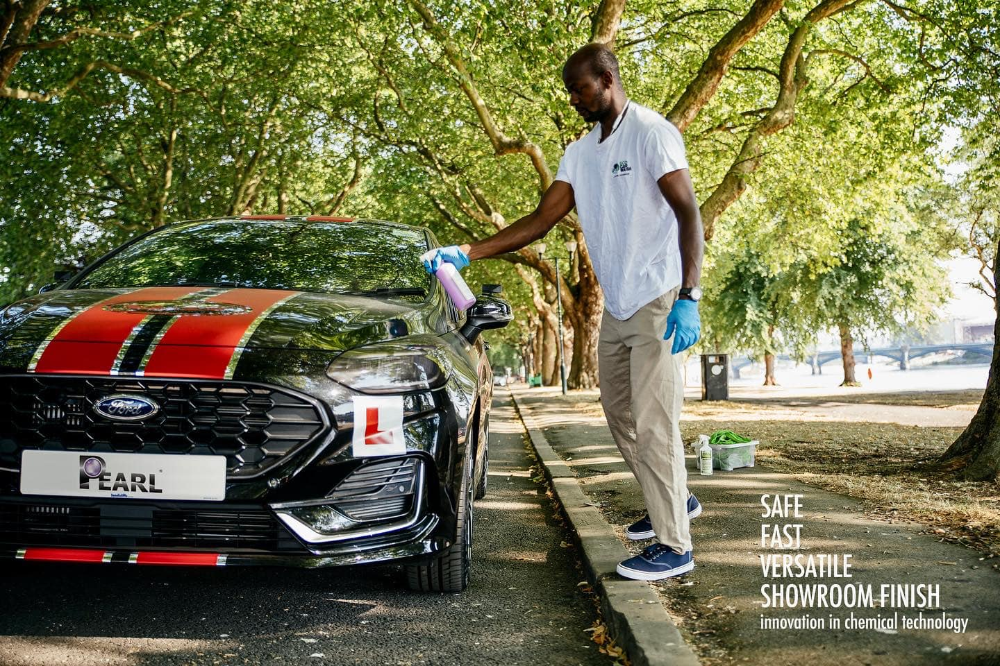

每一次洗車都在守護水資源與時間。英國原廠獨立實測：每台車僅需 160ml 免水洗車液，即可省下逾 300 公升自來水，徹底告別烈日排隊、水槍濺濕褲子與滿地積水泥濘。
英國研發中心進行嚴謹對比：傳統水桶/高壓水槍洗車 vs. Pearl 居家免水洗車系統。
一瓶 750ml 原裝噴霧可完整洗淨 4~5 輛車
相當於一個人 1.5 天的全日家庭用水量
免等待風乾、免擦水痕，一噴一擦立即光亮
大樓地下室車位施工不受管委會排污限制

台灣超過 70% 的都會車主居住在電梯大樓或集合式住宅。社區地下停車場通常嚴禁住戶接水管洗車，以免泥沙堵塞排水孔或地面积水引起其他鄰居滑倒投訴。
設定您的用車規模，看看改用免水洗車能為您帶來多大的便利與改變。
數據由 Pearl Global Ltd 曼徹斯特研發實驗室與國際第三方檢驗標準建立。